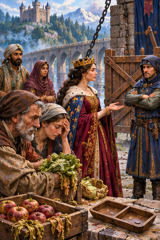
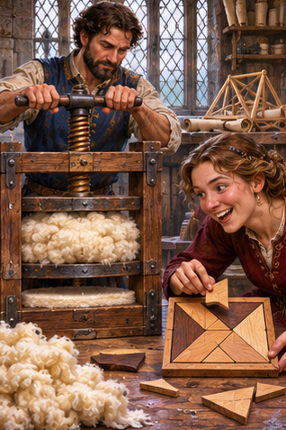

Batch34 — six paintings for review
Six318×477 JPGs,exact2:3. Four placeholders excluded. Nothing installed.
Original compositePDD 358 — Aptitud / Actitud
pdd358.jpgPDD 359 — Especia / Especie
pdd359.jpgPDD 360 — Adoptar y Adaptar
pdd360.jpg
PDD 361 — Perjuicio / Prejuicio
pdd361.jpg
PDD 364 — Compresión / Comprensión
pdd364.jpgPDD 365 — Afecto / Efecto
pdd365.jpg